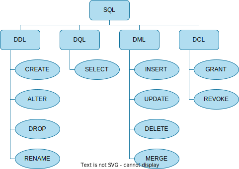

Licenca
To delo je na voljo pod pogoji slovenske licence Creative Commons 2.5:
priznanje avtorstva - nekomercialno - deljenje pod enakimi pogoji.
Celotna licenca je na voljo na spletu na naslovu http://creativecommons.org/licenses/by-nc-sa/2.5/si/. V skladu s to licenco je dovoljeno vsakemu uporabniku delo razmnoževati, distribuirati, javno priobčevati, dajati v najem in tudi predelovati, vendar samo v nekomercialne namene in ob pogoju, da navede avtorja oziroma avtorje in izdajatelja tega dela. Če uporabnik delo predela, kar pomeni, da ga spremeni, preoblikuje, prevede ali uporabi to delo v svojem delu, lahko predelavo dela ponudi na voljo le pod pogoji, ki so enaki pogojem iz te licence oziroma pod enako licenco.

Opis in zgodovina SQL
Kot smo že omenili v uvodu je SQL standardni poizvedovalni jezik za dostop do podatkov in upravljanje s podatki, shranjenimi v podatkovni bazi. SQL vsebuje različne programske stavke, ki jih združujemo v skupine znotraj jezika SQL. Te skupine vključujejo:
- definicijo podatkov, kar pomeni ustvarjanje in spreminjanje tabel oz. podatkovne sheme (ang. Data Definition Language – DDL);
- poizvedbe po podatkih (ang. Data Query Language – DQL);
- obdelavo podatkov, kar pomeni vstavljanje, posodabljanje in brisanje podatkov (ang. Data Manipulation Language – DML) ter
- nadzor dostopa do podatkov (ang. Data Control Language – DCL).

V prejšnji učni enoti smo spoznali, da je Edgar F. Codd leta 1970 razvil relacijski podatkovni model. Njegova kolega Donald D. Chamberlin in Raymond F. Boyce pa sta razvijala poizvedovalni jezik SQUARE (ang. Specifying Queries As Relational Expressions). Svoje izsledke sta objavila leta 1974, končno različico poizvedovalnega jezika, ki je temeljil na SQUARE, pa sta poimenovala SEQUEL (ang. Structured English Query Language).
Kratico SEQUEL je pred tem že registrirala letalska družba Hawker Siddeley. Ker nista želela kršiti pravil blagovne znamke, sta ime poizvedovalnega jezika okrajšala v SQL (ang. Structured Query Language). Ti dve različni kratici sta vir prepirov, saj ljudje, ki se ukvarjajo s podatkovnimi bazami uporabljajo dve različni izgovorjavi. Eni izgovarjajo kratico SQL kot »sequel«, kot je bila izvorna kratica, drugi pa izgovarjajo »S.Q.L.«, torej vsako črko posebej. V standardu piše, da je pravilna druga izgovorjava – vendar kljub temu velja, da sta obe izgovorjavi ustrezni.
Podjetje IBM, pri katerem so bili zaposleni vsi trije, je leta 1979 izdalo sistem za upravljanje relacijskih podatkovnih baz, ki je uporabljal tudi jezik SQL. Poimenovali so ga »System R«. Temu je leta 1981 sledil sistem »SQL/DS« in leta 1983 sistem »DB2«, ki je še danes paradni konj podjetja IBM na področju sistemov za upravljanje relacijskih podatkovnih baz.
Interaktivne vaje
V nadaljevanju se bomo naučili uporabjati jezik SQL s pomočjo vgrajenih interaktivnih vaj. Ukaze jezika SQL lahko neposredno vnašaš v interaktivni element. S pomočjo grafičnega vmesnika lahko izvajaš iste vaje še nad podatkovno bazo v formatu SQLite, ki si jo moraš najprej shraniti. Priporočamo grafični vmesnik SQLite Studio ali SQLite Database Browser – oba programa sta brezplačna in delujeta v različnih operacijskih sistemih (Linux, Mac OSX, Windows).
Najprej se bomo naučili pridobiti podatke iz obstoječe podatkovne baze. Nato se bomo naučili, kako vstavljamo in posodabljamo podatke v podatkovni bazi ter kako jih iz podatkovne baze izbrišemo. Za zaključek pa se bomo naučili še, kako v podatkovni bazi ustvarimo prazne tabele ter kako jih spreminjamo ali odstranimo iz podatkovne baze. Povedano krajše bomo najprej spoznali DQL, nato DML in DDL, za konec pa še DCL skupino znotraj jezika SQL.